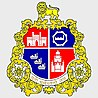
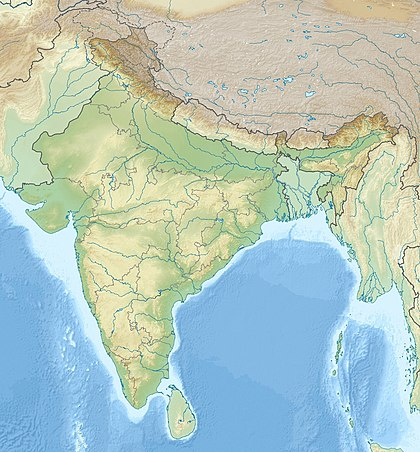
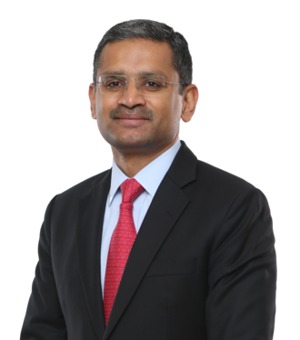
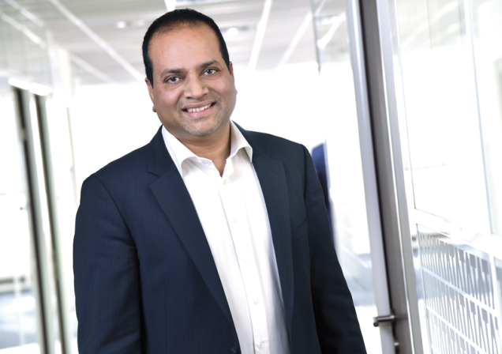

L'histoire de TCS et l'identité
Créé en 1968 en Inde, TCS est une filiale du groupe Tata
Le groupe Tata existe depuis 1868, créé par Jamsetji Nusserwanji

TCS est une entreprise qui travaille en informatique l'une des plus importantes sociétés au monde dans son domaine
le siege social de l'entreprise est à Bombay ou Mumbai en inde

Forme juridique: SA à conseil d'administration
Rajesh Gopinathan à la direction de l'entreprise

En france c'est Rammohan Gourneni qui est le directeur
